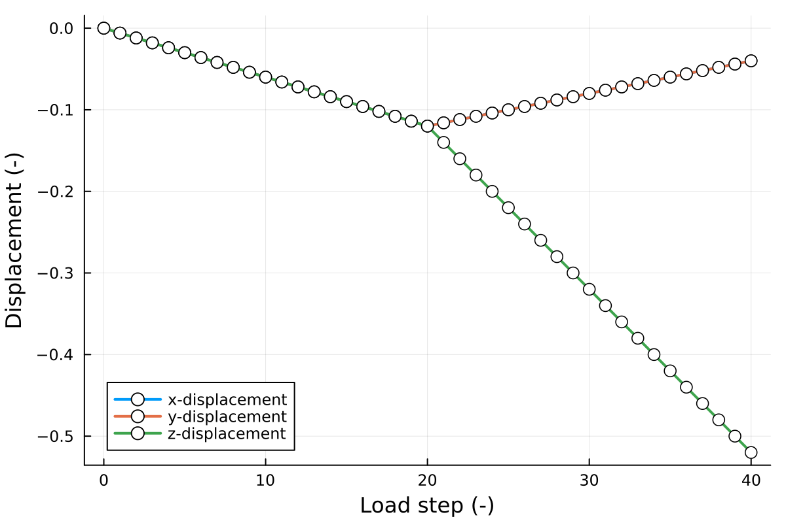
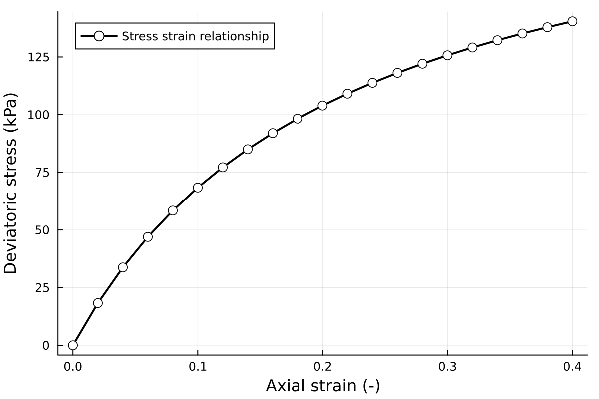
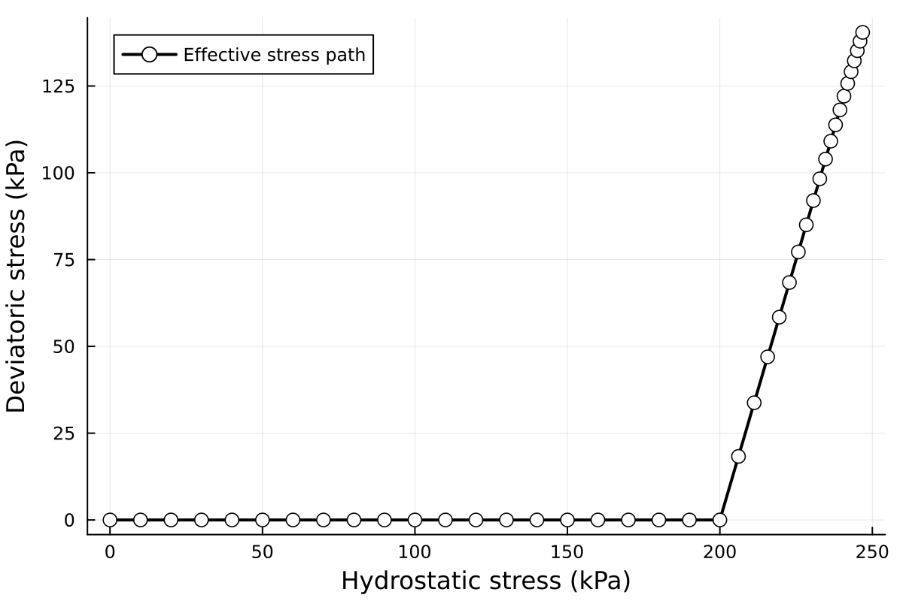
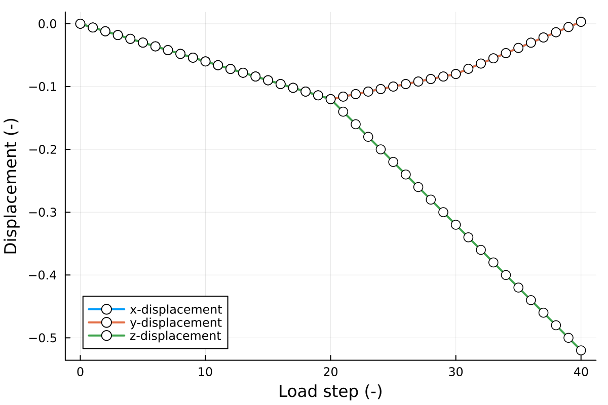
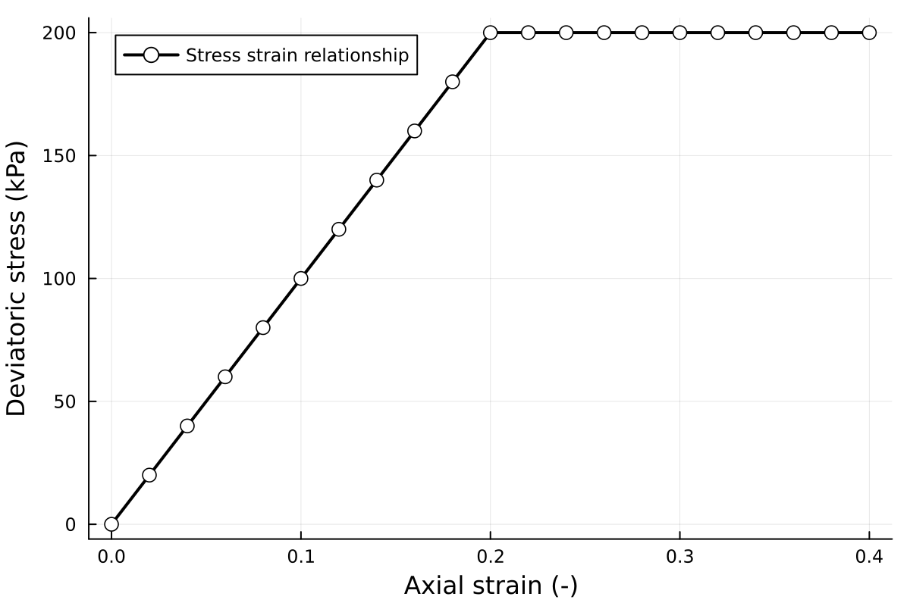
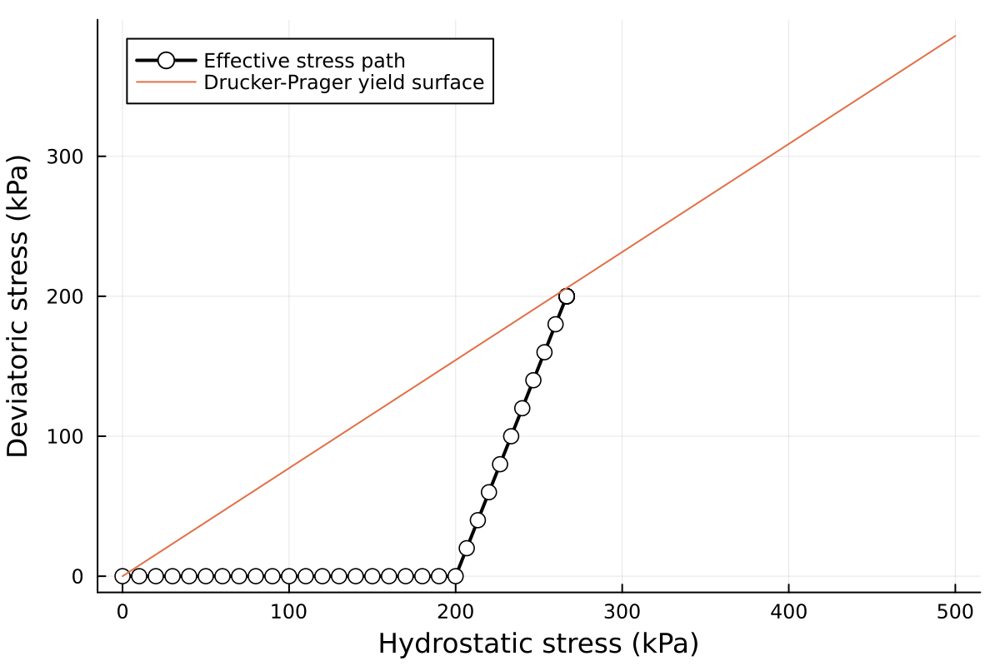
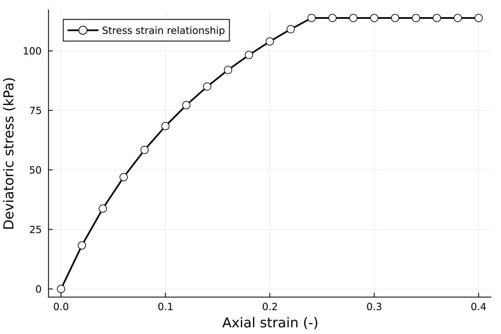
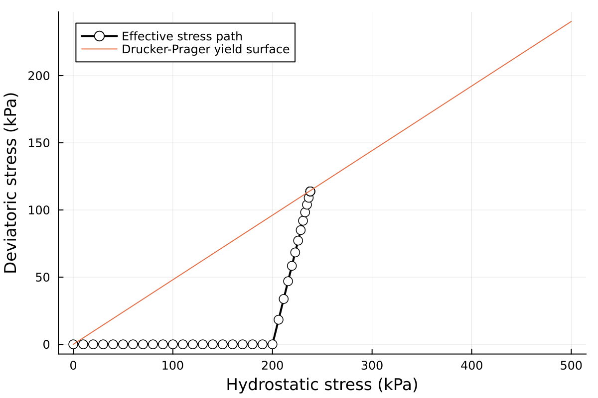

Constitutive models
This tutorial implements three constitutive models to the Triaxial Tests, namely the small strain overlay (SSO) model, the elasto-perfect plastic Drucker-Prager (DPconst) model, and the combination of SSO and DP model (DPSSO).
Small strain overlay model (LSSO)
Based on the tutorial of Triaxial tests, just change the name of the constitutive models in the input parameters BracedExcavation.PARAMSDT could change the material behaviours. The results are shown in Figs. 1 and 2.
julia> PARAMS = PARAMSDT(CONSTM="LSSO")
Figure 1. Displacements in x, y, and z directions for the SSO model.
 Figure 2. Left: Stress-strain relationships for SSO model; Right: Effetive stress paths for SSO model.
Perfect plastic Drucker-Prager model (DPconst)
This section shows the results with the elasto-perfect plastic Drucker-Prager model (DPconst). The results are shown in Figs. 3 and 4.
julia> PARAMS = PARAMSDT(CONSTM="DPconst")
Figure 3. Displacements in x, y, and z directions for the DPconst model.
 Figure 4. Left: Stress-strain relationships for DPconst model; Right: Effetive stress paths for DPconst model.
Combination of SSO and DP model (DPSSO)
For the elastic region, the model behaviours are governed by the SSO model. When the stress reaches the yield surface defined by Drucker-Prager, the model shows perfect plastic behaviours.
julia> PARAMS = PARAMSDT(CONSTM="DPSSO", THETA=π / 14) # combination of SSO and DP model (DPSSO)Figure 3. Displacements in x, y, and z directions for the DPSSO model.
 Figure 4. Left: Stress-strain relationships for DPSSO model; Right: Effetive stress paths for DPSSO model.
Extension
The braced excavation is a problems with unloading, which equals to the extension in the triaxial tests. The unloading tests for the Hooke3d, LSSO, DPconst, and DPSSO are also tested, and the code works robust, results are not shown here. The following 3D full excavation tutorial will show the test with unloading external forces.